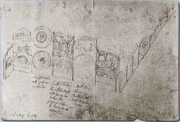

Excavations at AmaravatiThere is evidence that the Amaravati Stupa was still used by worshippers up until certainly A.D. 1344. Hinduism was the main religion in the country at this time, but there were still practising Buddhists in India. Soon after this period, the Amaravati Stupa fell into disrepair. By the end of the 1700s all that could be seen of the structure was a mound of rubble and some pieces of sculpture on the ground. In 1797, a British colonel named Colin Mackenzie heard of Amaravati and visited the site.Mackenzie returned to Amaravati in 1816 to find that many pieces of the sculpture had been carted away and reused in local building projects. Mackenzie began to draw and record the sculptures remaining at the site. He sent some of the sculptures to the museum at Calcutta. In 1845, Sir Walter Elliot began excavating at the site. All that remains of his work at Amaravati are a few sketches and the sculptures that he dug up. In the 1880s Robert Sewell excavated at Amaravati. Sewell's team made many notes and sketches and a report was later written about the excavation.

A drawing by Sir Walter Elliot of the north side of the west gate of the Amaravati Stupa. Early excavations give us some information about the state of the Amaravati site during the eighteenth and nineteenth centuries. However, archaeologists at this time did not record the location of the sculptures and objects they found in the way modern archaeologists would. The result is that we do not know exactly where most of the sculptures were found. Many archaeologists have excavated at the Amaravati site in the twentieth century. Although most of the major pieces of sculpture are gone from the site, many important pieces remain. Archaeologists have made some interesting finds which help us understand what the site may have originally been like. |